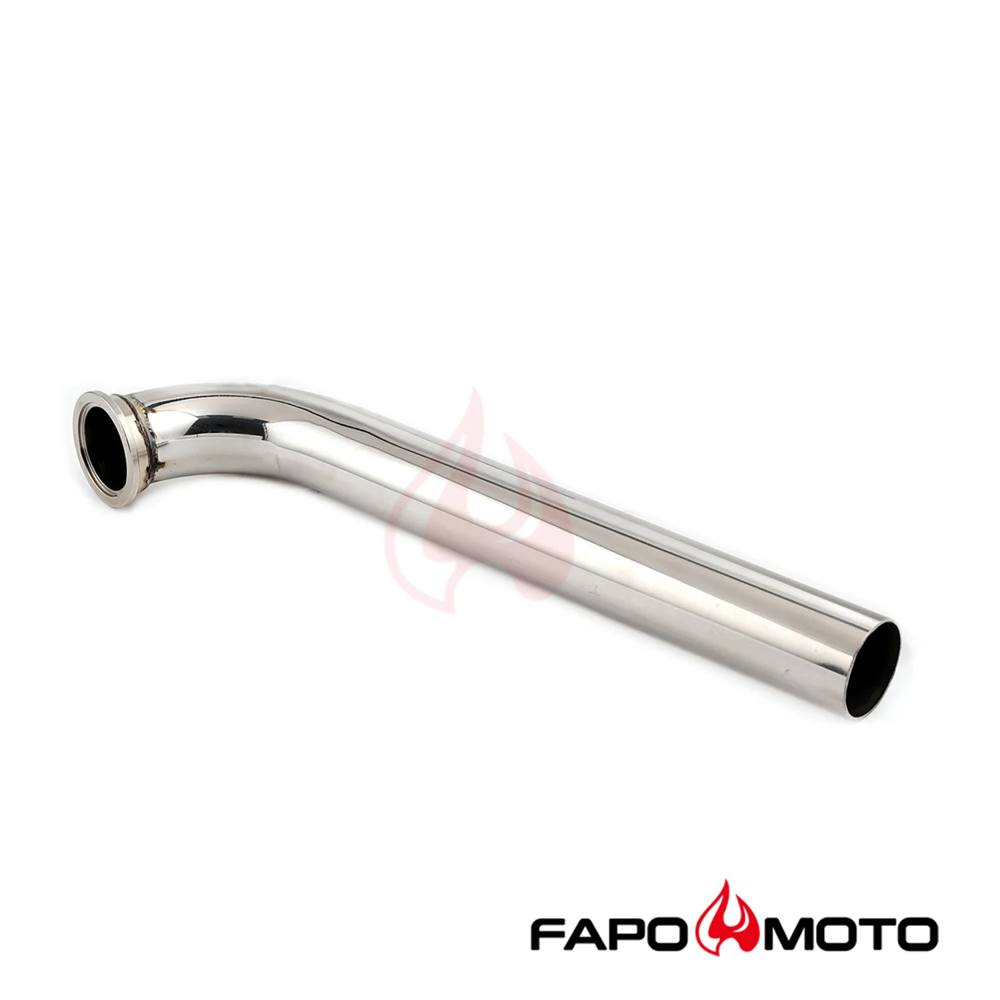

1 / 7Universal Dump Pipe 1.75 304SS V-Band Flanged Do 44mm 60mm Wastegate FE790310
Cechy Wykonane z wysokiej jakości stali nierdzewnej T-304 o grubości 16, ze skomputeryzowanymi zagięciami trzpieniowymi Wszystkie połączenia są spawane metodą TIG, aby zapobiec pęknięciom i zużyciu Kołnierzowy do przepustnicy Tial z paskiem V Maksymalizuje płynny przepływ powietrza wywiewanego Wysokowydajny projekt wyścigowy JDM Przekierowuje gorące spaliny z przepustnicy w kierunku dolnej części silnika, aby ułatwi…
Features Made of high quality 16-gauge T-304 stainless steel with computerized mandrel-bends All joints are TIG welded to prevent cracking and wear Flanged for Tial V-banded wastegate Maximizes smoothest exhaust airflow High performance JDM racing design Redirects hot exhaust gases from the wastegate towards the bottom of the engine for easier and further exhausting Convenient conversion for reducing high temperature in the engine bay; makes a very distinct and loud release of air Built from heavy duty stainless flanges and thick-wall stainless cast pipe Polished surface for extra protection against rusting 100% brand new items, never used or installed The accessories in the photos are included 1 year warranty for any manufacturing defect Technical Specifications Type: Wastegate Dump Pipe Wastegate Fitment: 44/60mm (V-band) Pipe Diameter: 1-3/4 in. (45mm) Pipe Thickness: 16 gauge (1.5mm) Material: 304 Stainless Steel Finish: Polished
799,99 PLN
Opis produktu
Cechy
- Wykonane z wysokiej jakości stali nierdzewnej T-304 o grubości 16, ze skomputeryzowanymi zagięciami trzpieniowymi
- Wszystkie połączenia są spawane metodą TIG, aby zapobiec pęknięciom i zużyciu
- Kołnierzowy do przepustnicy Tial z paskiem V
- Maksymalizuje płynny przepływ powietrza wywiewanego
- Wysokowydajny projekt wyścigowy JDM
- Przekierowuje gorące spaliny z przepustnicy w kierunku dolnej części silnika, aby ułatwić i zapewnić dalsze ich odprowadzanie
- Wygodna konwersja w celu zmniejszenia wysokiej temperatury w komorze silnika; powoduje bardzo wyraźne i głośne wypuszczenie powietrza
- Zbudowany z wytrzymałych kołnierzy ze stali nierdzewnej i grubościennej rury z odlewu ze stali nierdzewnej
- Polerowana powierzchnia dla dodatkowej ochrony przed rdzą
- Przedmioty w 100% nowe, nigdy nie używane ani instalowane
- Akcesoria widoczne na zdjęciach są wliczone w cenę
- 1 rok gwarancji na wszelkie wady produkcyjne
Dane techniczne
- Typ: rura zrzutowa wastegate
- Montaż Wastegate: 44/60mm (pasek V)
- Średnica rury: 1-3/4 cala (45 mm)
- Grubość rury: 16 mm (1,5 mm)
- Materiał: stal nierdzewna 304
- Wykończenie: polerowane
Features
- Made of high quality 16-gauge T-304 stainless steel with computerized mandrel-bends
- All joints are TIG welded to prevent cracking and wear
- Flanged for Tial V-banded wastegate
- Maximizes smoothest exhaust airflow
- High performance JDM racing design
- Redirects hot exhaust gases from the wastegate towards the bottom of the engine for easier and further exhausting
- Convenient conversion for reducing high temperature in the engine bay; makes a very distinct and loud release of air
- Built from heavy duty stainless flanges and thick-wall stainless cast pipe
- Polished surface for extra protection against rusting
- 100% brand new items, never used or installed
- The accessories in the photos are included
- 1 year warranty for any manufacturing defect
Technical Specifications
- Type: Wastegate Dump Pipe
- Wastegate Fitment: 44/60mm (V-band)
- Pipe Diameter: 1-3/4 in. (45mm)
- Pipe Thickness: 16 gauge (1.5mm)
- Material: 304 Stainless Steel
- Finish: Polished
FAPO Polska
Ten produkt obsługujemy lokalnie
Autoryzowana obsługa
FAPO Polska prowadzi katalog, kontakt i zamówienia bez odsyłania klienta do zewnętrznych sklepów.
Dobór po aucie
Sprawdzamy dopasowanie produktu do pojazdu, rocznika i wersji przed finalizacją zamówienia.
Wsparcie po zakupie
Masz kontakt w Polsce w sprawach zamówień, wysyłki, gwarancji i zwrotów.